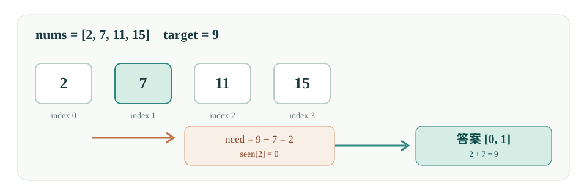
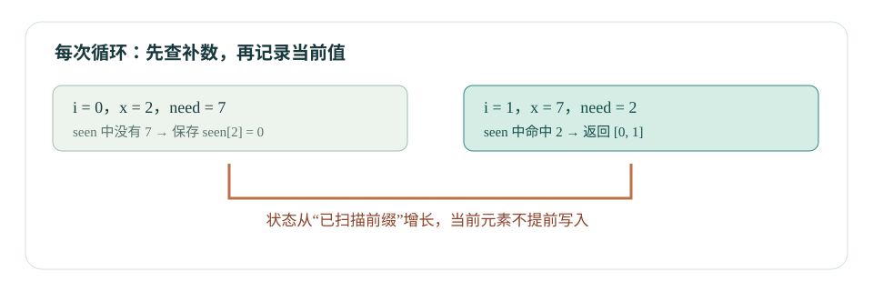
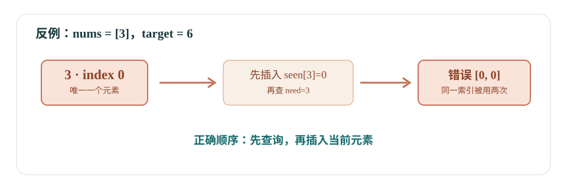

LeetCode 1 · 两数之和
把“找另一个数”改写成一次哈希查询。
简单 Easy12 分钟Hash Map01 · 题意与朴素基线
给定整数数组 nums 和目标值 target，返回两个不同位置的下标，使这两个位置上的数相加等于 target。题目保证恰好存在一个答案，同一个元素不能使用两次；返回顺序不限。
枚举每一对下标 (i, j)，检查 nums[i] + nums[j] 是否等于 target。它一定能找到答案，但最坏要检查 n(n−1)/2 对，时间复杂度是 O(n²)。
关键不是“如何更快地遍历所有数对”，而是：固定当前数字 x 后，另一个数字其实已经被唯一确定为 target − x。

02 · 补数映射：把搜索变成查表
当扫描到 nums[i] = x 时，令 need = target − x。我们只需要知道 need 是否在之前出现过，以及它之前出现在哪个下标。
- 建立空字典 seen，键是已经扫描过的数值，值是该数值对应的一个下标。
- 对当前数 x，先查询 need = target − x。
- 如果 need 在 seen 中，返回 [seen[need], i]。
- 否则把当前值及其下标写入 seen，继续扫描。
题目要求返回位置。字典把“数值 → 位置”关联起来，查询命中时就能直接构造答案，不需要再扫描数组寻找下标。
03 · 扫描过程中，seen 到底代表什么？
开始处理下标 i 之前，seen 恰好记录了 nums[0:i] 中已经扫描过的值及其下标。也就是说，它只包含当前元素左边的候选，不包含当前元素本身。
这个定义同时解释了为什么代码必须“先查、后存”。如果先把 nums[i] 写进 seen，再查补数，那么当 nums[i] × 2 = target 时，当前元素可能错误地与自己配对。

04 · 逐步执行一次
样例 nums = [2, 7, 11, 15]，target = 9。下面展示两轮查找，以及一个容易写错的单元素反例。
i=0：当前值 2，补数是 7。seen 为空，没有命中；把 2 的索引 0 写入哈希表。
i=0 · need=7 · seen={2:0}
05 · 正确性：为什么不会漏掉那一对？
设题目唯一答案的两个下标为 a 和 b，不妨令 a 小于 b。算法扫描到 b 时，当前值是 nums[b]，它需要的补数恰好是 nums[a]。由于 a 已经被扫描过，根据循环不变量，nums[a] 一定在 seen 中，因此算法会在 b 处命中并返回这两个下标。
反过来，算法只有在 seen 中找到 target − nums[i] 时才返回。seen 中的下标严格小于 i，因此返回的两个位置必定不同；并且两数之和按补数定义恰好等于 target。于是算法既不会返回错误答案，也不会漏掉题目保证存在的答案。
06 · Python 参考实现
class Solution:
def twoSum(self, nums: list[int], target: int) -> list[int]:
seen: dict[int, int] = {}
for i, value in enumerate(nums):
need = target - value
if need in seen:
return [seen[need], i]
seen[value] = i
return [] # 题目保证有解；保留兜底便于独立测试
复杂度分析
| 维度 | 结论 | 原因 |
|---|---|---|
| 时间 | 期望 O(n) | 每个元素只处理一次，字典查询与插入期望 O(1)。 |
| 额外空间 | O(n) | 最坏情况下需要保存前 n−1 个不同值及其下标。 |
| 输入修改 | 不修改 | 只读 nums，所有状态保存在 seen。 |
这里的 O(1) 哈希操作是期望复杂度，不应表述为任意情况下的无条件最坏 O(1)。
07 · 易错点：先查后存不是风格问题
对于 nums = [3]、target = 6，数组里只有一个元素，不可能选出两个不同下标。如果先插入 seen[3] = 0，再查 need = 3，就会把下标 0 与自己配对，错误返回 [0, 0]。

可以迁移到哪些题？
- 需要快速判断某个补数是否出现过：哈希表。
- 只关心某个值是否出现过、不需要它的下标：哈希集合通常更合适。
- 需要统计频次：把字典值从下标改为计数。
复盘时先问：当前扫描到哪里？辅助结构记录的是哪一段前缀？如果能精确回答这两个问题，哈希表题的状态设计通常就清楚了。